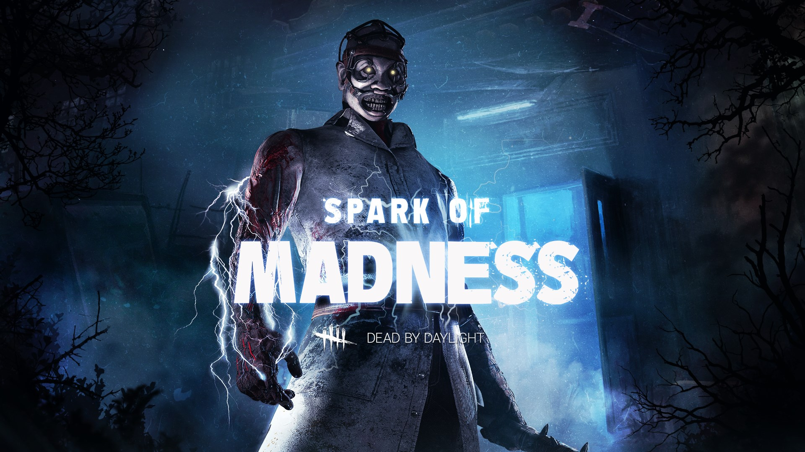
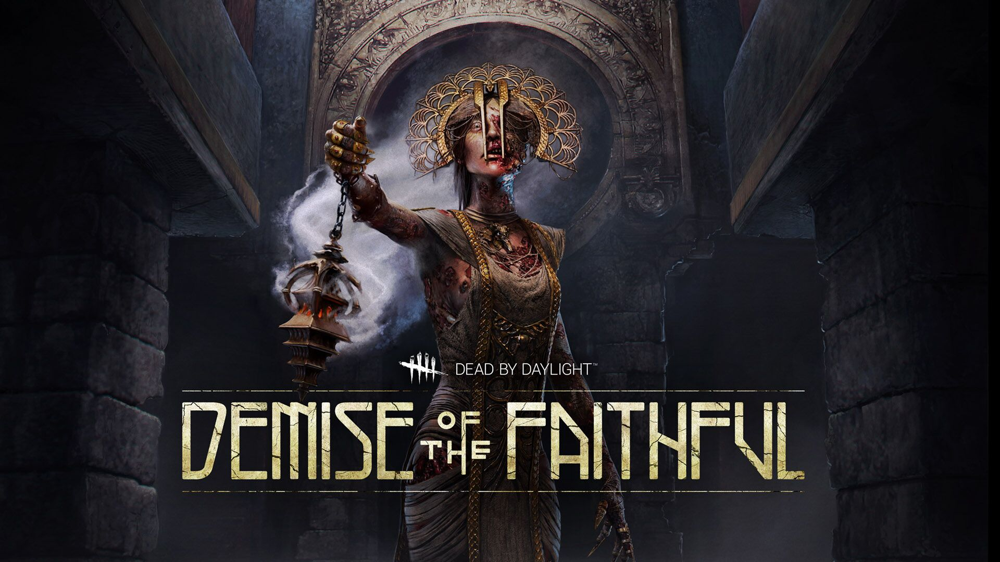

FEATURING:
THE ONI & YUI KIMURA


FEATURING:
THE DOCTOR & FENG MIN
THE DOCTOR & FENG MIN

FEATURING:
THE PLAGUE & JANE ROMERO
THE PLAGUE & JANE ROMERO

PURCHASE DEAD BY DAYLIGHT
Dead by Daylight is an asymmetrical multiplayer horror game where one player takes on the role of a brutal Killer and the other four play as Survivors. As a Killer, your goal is to sacrifice as many Survivors as possible. As a Survivor, your goal is to escape and avoid being caught and killed.
THE DOCTOR UPDATE
With the next mid-chapter update comes big changes to core elements of The Doctor's gameplay, as well as a visual and gameplay update of the Treatment Theatre map. With The Doctor being one of the focus characters of the Archives Tome II: Reckoning, it seemed like the perfect time to introduce these changes.
WINTER GIFTS
In the spirit of the season, we’ve gifted all our players some fun cosmetic items, including a new Holiday Tree Charm, Bill’s festive Ugly Sweater, and some terrifying Frosty Eyes for The Oni & The Plague! We’ve also provided all players with some previously released Ultra Rare items, including some convention exclusives.